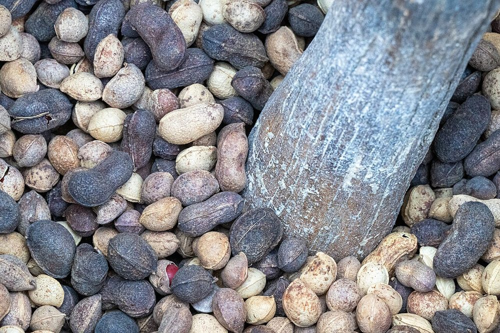

Culture vivrière
Voandzou
Pois bambara, pois de terre
- Cycle 90 à 120 jours
- Mise à jour 2026-10-21
- Niveau de confiance partiel

Présentation et utilisations
Légumineuse à graines enterrées, cultivée surtout pour l'alimentation familiale et la vente de proximité. Elle fixe l'azote et supporte des sols pauvres, ce qui en fait une culture de rotation utile avant une céréale. Les graines se conservent longtemps sans traitement, ce qui limite les pertes après récolte.
Climat et sols
Climat chaud et sec apprécié ; elle tolère une pluviométrie modérée et résiste mieux à la sécheresse que beaucoup d'autres légumineuses. Sols légers, sableux ou sablo-argileux, bien drainés : l'eau stagnante fait pourrir les graines enterrées. Éviter les sols lourds et compactés.
Variétés adaptées
Les variétés locales à graines claires ou foncées sont les plus répandues ; les noms variétaux ne sont pas documentés dans les sources internes disponibles. À faire préciser par une station de recherche ou un service de vulgarisation avant tout achat de semence.
Calendrier cultural
Semis en début de saison des pluies, dès que le sol est humidifié en profondeur. Récolte 3 à 4 mois plus tard. Repères climatiques généraux en Côte d'Ivoire : grande saison des pluies de mars à juillet, petite saison de septembre à novembre — à ajuster selon la zone (Nord et Sud très différents).
Préparation du terrain
Labour léger ou travail superficiel pour ameublir la couche où les graines seront enterrées. Nivellement soigné : les cuvettes retiennent l'eau et favorisent la pourriture. Apport de matière organique compostée si le sol est très pauvre.
Semis et plantation
Semis en poquets, graines enfoncées de quelques centimètres puis recouvertes. Densité et écartement à confirmer localement : le voandzou a besoin d'espace pour former ses gousses souterraines. Semer sur sol humide, jamais dans une flaque.
Entretien, fertilisation, irrigation
Deux sarclages suffisent généralement : la culture couvre le sol et limite ensuite les adventices. Éviter les engrais azotés forts, la plante fixant elle-même l'azote. Apport de phosphore si le sol est carencé, sur avis technique.
Engrais : quoi, combien, quand
Légumineuse : elle fixe l'azote de l'air. Le raisonnement porte donc sur le phosphore et le potassium, pas sur l'urée.
| Apport | Dose | Quand | Comment |
|---|---|---|---|
| OrganiqueCompost ou fumier bien décomposé | 5 à 10 t/ha | 2 à 3 semaines avant le semis | Épandu puis enfoui au labour |
| MinéralPhosphore (P2O5) | 20 à 40 kg/ha | Au semis | Localisé en poquet, sous la graine (éviter le contact direct) |
| MinéralPotassium (K2O) | 10 à 20 kg/ha | Au semis | Seulement si le sol est carencé (cendre de bois possible) |
| MinéralAzote (N) | 0 kg/ha | — | Aucun apport : la nodulation fournit l'azote. Un sol vierge gagne à être inoculé. |
Doses par hectare de culture pure, à ajuster selon l'analyse de sol. Sans analyse, rester dans la fourchette basse et fractionner l'azote : c'est le geste qui évite de brûler la culture et de payer un engrais qui ne sera pas valorisé.
Maladies, ravageurs et prévention
Surveiller les attaques de chenilles défoliatrices et les pourritures de graines en sol détrempé. La prévention repose sur la rotation, le drainage et l'usage de semences saines. Toute intervention chimique doit être décidée avec un technicien : les matières actives autorisées et les délais avant récolte ne sont pas documentés ici.
Récolte et post-récolte
Arracher lorsque les fanes jaunissent et que les gousses se détachent facilement. Récolte progressive possible. Éviter d'attendre les pluies de fin de saison : les graines germent sur pied ou pourrissent.
Conservation et transformation
Séchage à l'ombre sur aire propre, puis stockage en sacs dans un local sec, surélevé. Graines bien sèches = conservation longue sans insecticide. Contrôler l'humidité avant fermeture des sacs.
Coûts, rendements et débouchés
Débouchés : graines, farine, bouillie, marché urbain de proximité. Aucun prix officiel spécifique n'est publié dans les sources internes ; ne pas bâtir de budget sur un prix supposé. Les postes de dépense principaux sont la semence, le travail du sol, deux sarclages et le séchage.
Tutoriel étape par étape
- 1. Choisir la parcelle
Choisissez une terre légère, au soleil, sans creux où l'eau reste.
- 2. Préparer le sol
Travaillez la terre en surface, nivelez, ajoutez du compost bien mûr si vous en avez.
- 3. Trier la semence
Gardez les plus grosses graines ; jetez celles qui ont un trou ou de la moisissure.
- 4. Semer
Semez en petits tas espacés, recouvrez de quelques centimètres de terre fine, sur sol humide.
- 5. Entretenir
Deux sarclages à la main, sans abîmer les racines ; surveillez les chenilles et l'eau qui stagne.
- 6. Récolter et sécher
Arrachez à maturité, séchez les gousses à l'ombre, battez et triez ; gardez au sec.

Crop Trust · CC BY-SA 4.0 · Wikimedia Commons
Sources, vérification et limites
- Base de connaissances interne · knowledge/agronomie.md, knowledge/techniques_agricoles.md (consulté le 2026-10-21)
Limites de cette fiche. Variétés, densités et seuils de traitement ne sont pas documentés dans les sources internes. Aucune donnée de rendement ni de prix vérifiée n'est disponible : à collecter auprès de l'ANADER ou d'une station de recherche avant de chiffrer un budget.
Dernière mise à jour : 2026-10-21. Les prix, rendements et calendriers locaux ne sont mentionnés que lorsqu'ils sont documentés ; dans le doute, la fiche le dit.